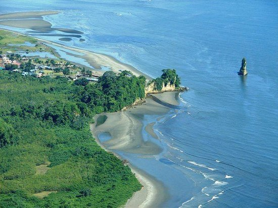
Playa El Morro
Una hermosa playa amplia para disfrutar de sus olas y espacios para descansar. Ideal para atardeceres.
Breve reseña histórica y cultural: Tumaco es un puerto del Pacífico colombiano con una profunda tradición afrodescendiente. Su historia combina la pesca artesanal, la música de marimba y festividades comunitarias que conservan raíces ancestrales.
Diversidad étnica y gastronomía: La ciudad se caracteriza por su riqueza cultural: la marimba, los tambores y la danza forman parte de su identidad. Platos emblemáticos como el encocado, la piangua y camarones frescos son indispensables para el visitante.
Información geográfica: Tumaco posee playas de arena, un archipiélago de islas cercanas y extensos manglares que conforman ecosistemas clave para la biodiversidad marina y de aves.
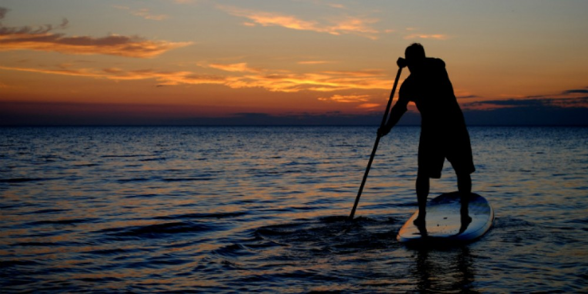
Es un deporte acuático versátil y accesible, que combina elementos del surf y el kayak, y se puede practicar en diversas aguas como lagos, ríos y el mar.
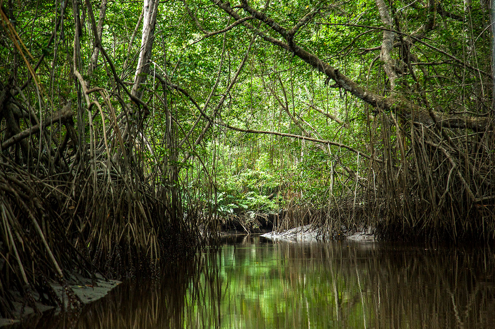
Rutas en canoa entre manglares para observar aves y aprender de guías locales. En esta ruta del manglar en Tumaco - Nariño, tendrás la oportunidad de extraer pianguas y sembrar tu manglar junto a mujeres emprendedoras.
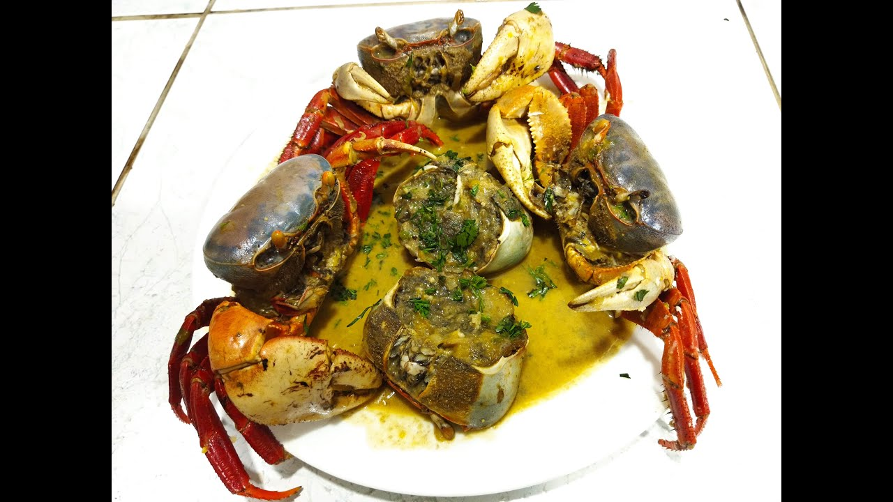
Aprende a realizar un delicioso encocado de cangrejo, encocado de concha, encocado de pescado y platos con mariscos frescos en esta hermosa experiencia.

Una hermosa playa amplia para disfrutar de sus olas y espacios para descansar. Ideal para atardeceres.
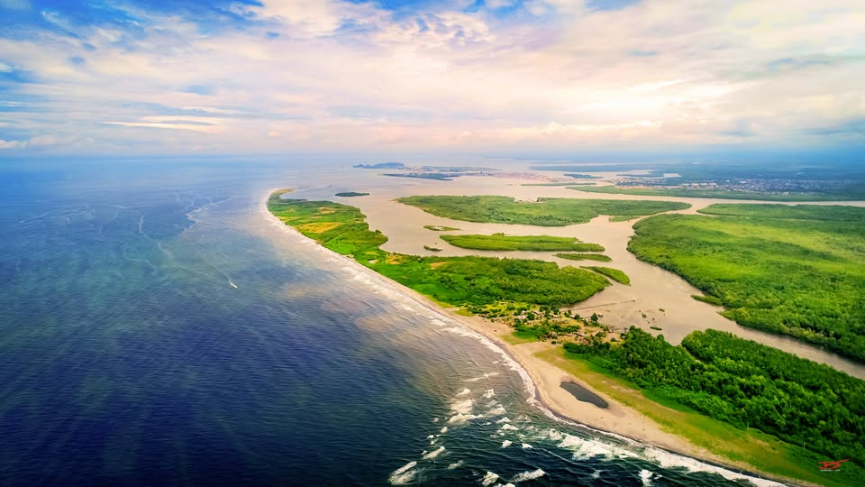
Isla cercana con playas reservadas y buena pesca. Excursiones en lancha desde Tumaco.
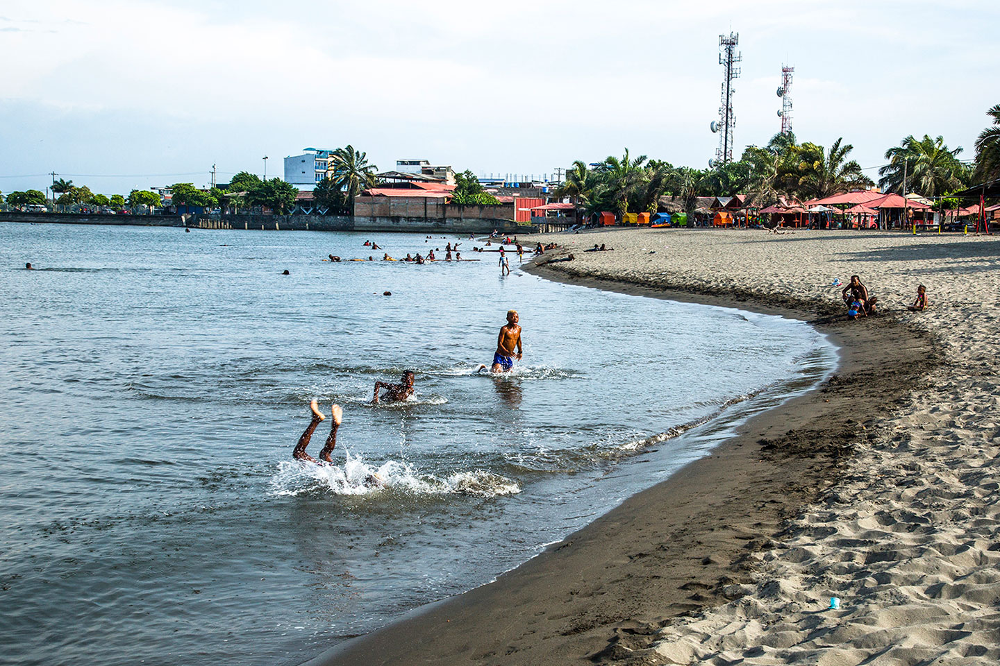
Una hermosa playa para disfrutar de un hermoso atardecer y su gastronomía.
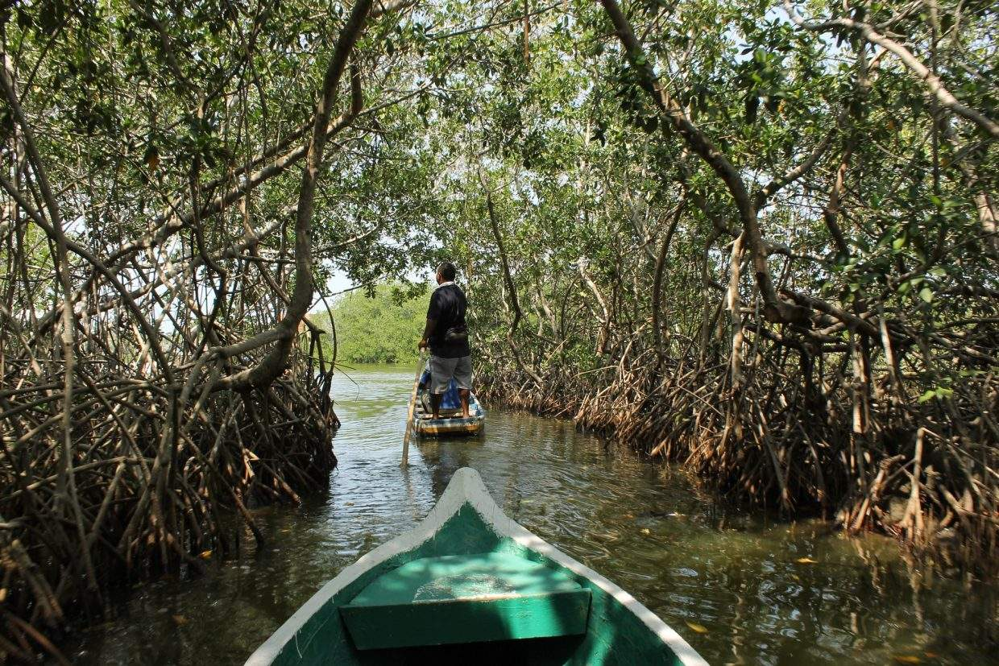
Los manglares en Tumaco, ubicados en la costa del Pacífico colombiano, son ecosistemas vitales que albergan una gran riqueza biológica...
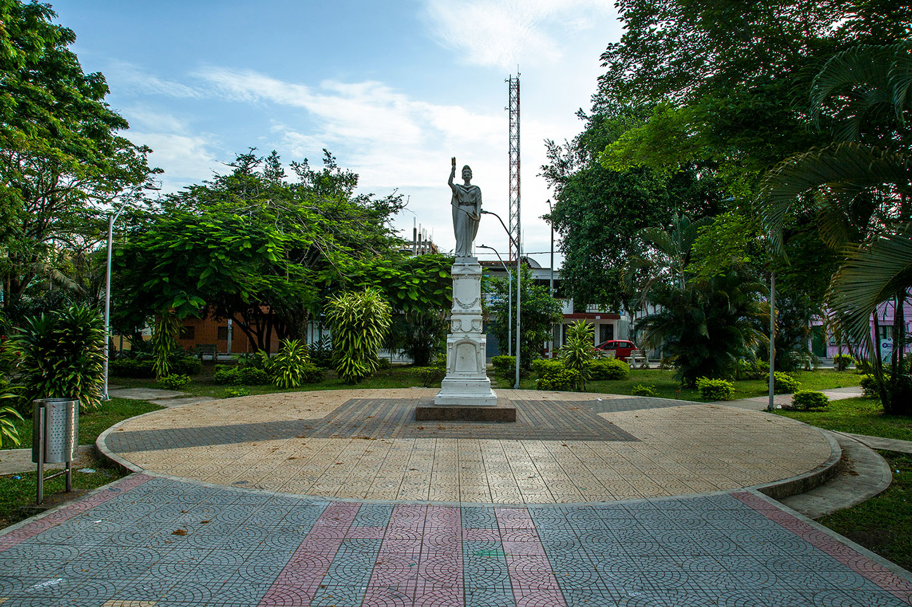
El Parque Colón es uno de los espacios más reconocidos en la ciudad, es el parque central de Tumaco y constante punto de encuentro...

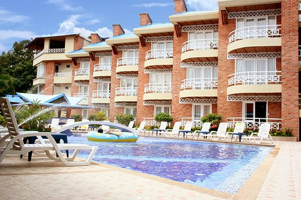
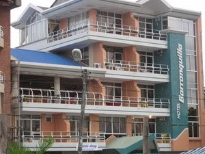
Guías locales: Contacta guías certificados para rutas de manglar, pesca y avistamiento de ballenas (temporada alta).
Transporte: Tumaco recibe vuelos regionales y acceso por carretera desde Pasto y la costa pacífica. En destino la movilidad es en taxis, lanchas y motos.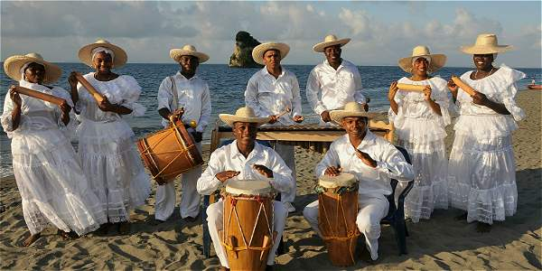
El Festival Internacional del Currulao se celebra anualmente en San Andrés de Tumaco, Colombia, para conmemorar y fortalecer la cultura afrodescendiente del Pacífico. El festival se lleva a cabo a finales de año, entre noviembre y diciembre, y ofrece a los asistentes música en vivo, danzas tradicionales, y actividades culturales para sumergirse en las tradiciones de la región. .
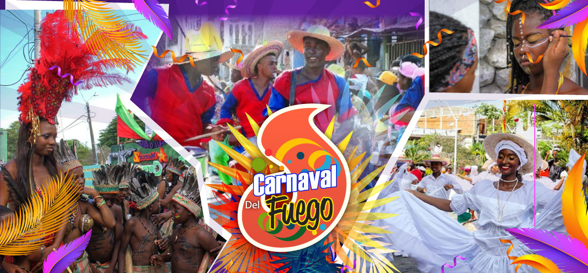
El Carnaval del Fuego de Tumaco es una de las festividades más importantes de Colombia y de la región del Pacífico, que conmemora la solidaridad de la comunidad tumaqueña tras un incendio que devastó una estación de bomberos, originando una celebración de cultura afrocolombiana, música, gastronomía, desfiles y un reinado para la recolección de fondos que se ha mantenido hasta hoy.
Síguenos para estar al tanto de eventos y promociones:
Oficina de turismo: — Tel: (+57) 3184722700 - (+57) 3156796767